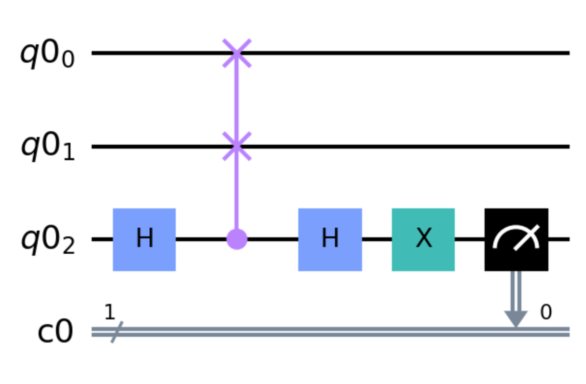
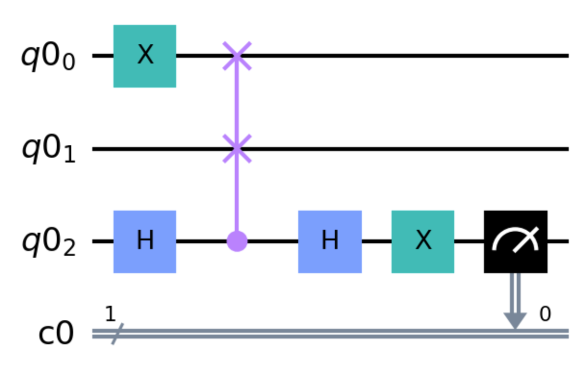

Quantum software testing with Quito
Introduction
Quito is a quantum software testing tool that can automatically generate test suites with three coverage criteria defined on inputs and outputs. These coverage criteria are as following:
input coverage (IC);
output coverage (OC);
input-output coverage (IOC).
Quito also defines two test oracles based on program specifications to assess test results, which are:
wrong output oracle (WOO);
output probability oracle (OPO).
You can check the detailed definition and validation in this paper. A video of the presentation for this paper can be found here. This tool is proposed in this paper. A video demo is available here.
Setup
Begin by activating the qcomp conda environment, either on your own computer or by starting a session on mybinder.org.
Next clone the Quito package:
$ git clone https://github.com/Simula-COMPLEX/quito.git
Exercise: the SWAP program
Step 1
Consider the following Swap program:
def run(qc):
qc.h(2)
qc.cswap(2,0,1)
qc.h(2)
qc.x(2)
qc.measure(2,0)

If \(q0_0\) and \(q0_1\) are in the same state, the measured qubit will be 0 with 100% probability.
Otherwise, there will be 50% probability for the measure qubit to be either 0 or 1.
Step 2
To run Quito on a quantum program you need to create a configuration file (ini file). It should have the following structure:
[program]
root=
;(Required)
;Description: The absolute root of your quantum program file.
num_qubit=
;(Required)
;Description: The total number of qubits of your quantum program.
inputID=
;(Required)
;Description: The ID of input qubits.
;Format: A non-repeating sequence separated by commas.
outputID=
;(Required)
;Description: The ID of output qubits.
;Format: A non-repeating sequence separated by commas.
[program_specification_category]
ps_category=
;(Required)
;Description: The category of your program specification.
;Choice: full/partial/no
[quito_configuration]
coverage_criterion=
;Description: The coverage criterion.
;Choice: IC/OC/IOC
K=
;(Optional)
;Description: The total number of test suites, K=200 by default.
M=
;(Optional)
;Description: The number of test suite groups, M=20 by default.
BUDGET=
;(Optional)
;Description: The budget of test suite size, BUDGET=10*number of inputs by default.
confidence_level=
;(Optional)
;Description: The confidence level for statistical test, confidence_level=0.01 by default.
statistical_test=one-sample Wilcoxon signed rank test
;(Optional)
;Description: The statistical test for assessment, statistical_test=one-sample Wilcoxon signed rank test by default.
[program_specification]
;(Required for full and partial program specification)
;Description: The program specification. ;Format:input string,output string=probability
Test the SWAP program
Save the
runfunction above into a fileSWAP.pyin the root directory of the Quito package.Based on the documented template above, create a configuration.ini file.
Run Quito from the repository root by
python Quito_CoverageRunning/quito.py.Enter a number to select the operation and follow the instructions.
Inspect the results. Is this what you expected?
Mutant
Now consider this mutant version:
def run(qc):
qc.x(0)
qc.h(2)
qc.cswap(2,0,1)
qc.h(2)
qc.x(2)
qc.measure(2,0)

Test the mutant version
What do you think will happen for this version?
Reproduce the steps you did for
SWAP.pyfor a new programSWAP_mutant.pyRun Quito as earlier and inspect the results. Is it what you expected?